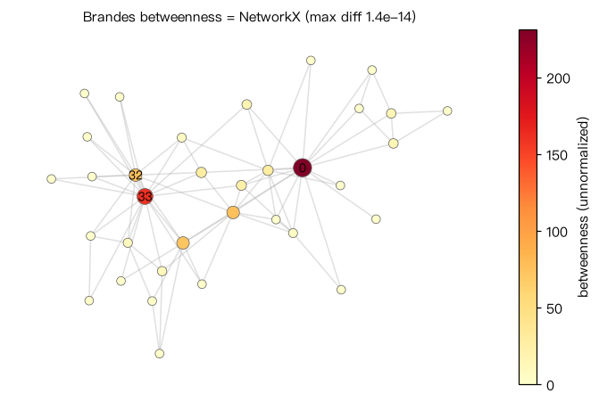

Example07 / 15
用 Brandes 算法手工计算介数中心性
Brandes（2001）：对每个源点 s 做一次 BFS，记录最短路径条数 σ_sv 与前驱；再按距离从远到近回溯， 累加依赖度 δ_s(v) = Σ_{w: v 是 w 的前驱} σ_sv/σ_sw · (1 + δ_s(w))。总代价 O(NM)。 无向图中每对节点被两个源点各计一次，最后除以 2。输出：与 nx.betweenness_centrality 完全一致。
Output输出图

Output文字输出
与 NetworkX 最大差异 = 1.42e-14 介数最大的 3 个节点: [0, 33, 32] [231.1, 160.6, 76.7]
Code代码
# Brandes（2001）：对每个源点 s 做一次 BFS，记录最短路径条数 σ_sv 与前驱；再按距离从远到近回溯，
# 累加依赖度 δ_s(v) = Σ_{w: v 是 w 的前驱} σ_sv/σ_sw · (1 + δ_s(w))。总代价 O(NM)。
# 无向图中每对节点被两个源点各计一次，最后除以 2。输出：与 nx.betweenness_centrality 完全一致。
import networkx as nx
from collections import deque
def brandes_betweenness(G):
bc = dict.fromkeys(G, 0.0)
for s in G:
stack, pred = [], {v: [] for v in G}
sigma = dict.fromkeys(G, 0); sigma[s] = 1
dist = dict.fromkeys(G, -1); dist[s] = 0
Q = deque([s])
while Q: # 阶段 1：BFS 计数最短路径
v = Q.popleft(); stack.append(v)
for w in G.neighbors(v):
if dist[w] < 0:
dist[w] = dist[v] + 1; Q.append(w)
if dist[w] == dist[v] + 1:
sigma[w] += sigma[v]; pred[w].append(v)
delta = dict.fromkeys(G, 0.0)
while stack: # 阶段 2：反向累加依赖度
w = stack.pop()
for v in pred[w]:
delta[v] += sigma[v] / sigma[w] * (1 + delta[w])
if w != s:
bc[w] += delta[w]
return {v: b / 2 for v, b in bc.items()} # 无向图去重
G = nx.karate_club_graph()
mine = brandes_betweenness(G)
ref = nx.betweenness_centrality(G, normalized=False)
print("与 NetworkX 最大差异 = %.2e" % max(abs(mine[v] - ref[v]) for v in G))
print("介数最大的 3 个节点:", sorted(mine, key=mine.get, reverse=True)[:3],
[round(mine[v], 1) for v in sorted(mine, key=mine.get, reverse=True)[:3]])
# 作图：节点大小与颜色 ∝ Brandes 介数，标出介数最大的 3 个节点
import matplotlib.pyplot as plt
fig, ax = plt.subplots(figsize=(6.4, 4.2))
pos = nx.spring_layout(G, seed=4)
bvals = [mine[v] for v in G]
nx.draw_networkx_edges(G, pos, ax=ax, edge_color="0.7", alpha=0.4)
nc = nx.draw_networkx_nodes(G, pos, ax=ax, node_size=[40 + 0.6 * b for b in bvals], node_color=bvals,
cmap="YlOrRd", edgecolors="0.4", linewidths=0.5)
top3 = sorted(mine, key=mine.get, reverse=True)[:3]
nx.draw_networkx_labels(G, pos, ax=ax, labels={v: str(v) for v in top3}, font_size=9)
fig.colorbar(nc, ax=ax, label="betweenness (unnormalized)")
ax.set_title("Brandes betweenness = NetworkX (max diff %.1e)" % max(abs(mine[v] - ref[v]) for v in G), fontsize=10)
ax.axis("off"); plt.tight_layout(); plt.show()Run在浏览器中运行
首次加载 Python 环境约需 20–40 秒；可以修改参数后重新运行。